초록
본 논문에서는 강화학습(RL)을 통한 실제 환경 배포를 통해 시각-언어-행동(VLA) 모델이 어떻게 향상될 수 있는지 연구한다. 우리는 어드밴티지 조건화 정책을 통한 경험 및 교정 기반 강화학습(Recap)이라는 범용적인 방법을 제시하며, 이는 어드밴티지 조건화를 통해 VLA의 강화학습 훈련을 가능하게 한다. 우리의 방법은 데모, 온정책(on-policy) 수집 데이터, 자율 실행 중 제공되는 전문가 원격 조작 개입을 포함한 이기종 데이터를 자기 개선 과정에 통합한다. Recap은 먼저 오프라인 RL로 제너럴리스트 VLA를 사전 훈련하는 것으로 시작하며, 이를 이라 부른다. 이는 이후 로봇 상에서의 데이터 수집을 통해 다운스트림 작업에서 높은 성능을 달성하도록 특화될 수 있다. 전체 Recap 방법으로 훈련된 모델이 실제 가정에서 빨래를 개고, 상자를 안정적으로 조립하며, 전문 에스프레소 머신을 사용하여 에스프레소 음료를 만들 수 있음을 보여준다. 가장 어려운 일부 작업에서 Recap은 작업 처리량을 두 배 이상 늘리고 작업 실패율을 대략 절반으로 줄인다.
I 서론
시도하기를 두려워하지 않는다면 배울 수 있는 것은 놀랍도록 많다.
로버트 A. 하인라인, 우주복 있음, 여행 준비 완료
연습이 완벽을 만든다. 사람은 새로운 기술을 습득하는 데 매우 유연하지만, 숙달을 위해서는 반드시 반복된 시도로부터의 학습이 필요하다. 시각-언어-행동(VLA) 모델과 같은 범용 로봇 파운데이션 모델을 사용하면 프롬프트를 통해 제너럴리스트 로봇의 작업을 유연하게 지정할 수 있다. 하지만 사람과 마찬가지로 이러한 모델도 숙달을 달성하려면 기술을 연습해야 한다. 이는 데모 데이터뿐만 아니라, 정책이 배포 중에 실제로 저지르는 실수를 교정하고, 인간의 원격 조작 수준을 넘어 속도와 강인성을 향상시키며, 새로운 배포 조건에 적응할 수 있도록 하는 자율적으로 수집된 경험적 데이터를 활용함을 의미한다. 강화학습(RL) [sutton2018reinforcement]으로 정형화된 자율 연습을 통한 학습의 기초는 수십 년 동안 알려져 왔지만, 이를 일반적이고 확장 가능한 로봇 학습 시스템으로 구현하는 것은 큰 과제를 안겨준다. 즉, 대형 모델을 위한 확장 가능하고 안정적인 RL 방법을 설계하는 것, 서로 다른 정책에서 얻은 이기종 데이터를 처리하는 것, 보상 신호가 모호하거나 확률적일 수 있는 실제 환경에서 보상 피드백을 사용한 RL 훈련을 설정하는 것 등이다.

본 논문에서 우리는 사전 훈련부터 자율 실행 데이터 훈련에 이르기까지 훈련 파이프라인의 모든 단계에서 VLA 모델이 보상 피드백을 통합할 수 있도록 하는 방법인 Recap을 제시한다. Recap은 데모, 자율 경험, 전문가 개입을 결합한 범용 레시피를 통해 이 문제를 해결하고자 한다. 범용 VLA의 훈련 레시피에서 시작하여 다양한 로봇 플랫폼의 다양한 데이터로 훈련하는 Recap은 먼저 오프라인 RL로 VLA를 사전 훈련한 다음, 배포를 통해 수집된 데이터로 추가 훈련을 진행한다. 이러한 배포 과정에서 로봇은 각 시도의 결과에 따라 (희소한) 보상 피드백을 받고, 잠재적으로 실수를 교정하는 추가적인 전문가 개입을 받는다. 훈련 과정은 오프라인 RL [LangeBatchRL, levine2020offline] 레시피를 따른다. 우리는 성공적인 작업 완료를 향한 진행 상황을 평가하는 가치 함수(value function)를 훈련한 다음, 이 가치 함수를 사용하여 데이터셋 내 각 행동의 어드밴티지(advantage)를 추정한다. 이 어드밴티지 [Frans2025DiffusionGuidance]에 기반한 개선 지표에 정책을 조건화함으로써 개선된 정책을 얻을 수 있다. 그림 LABEL:fig:teaser는 Recap의 고수준 개요를 제공한다.
우리는 Recap을 사용하여 다양한 빨래 개기, 상자 조립, 에스프레소 음료 제조와 같은 복잡한 작업을 위한 정책을 훈련할 수 있다. 이러한 작업 중 일부를 그림 2에 나타내었다. 이 방법은 다양한 멀티태스크 및 멀티로봇 데이터셋에서 오프라인 RL로 모델을 사전 훈련하는 것으로 시작한다. 는 RL을 위해 모델을 적응시킨 것이며, 는 더 큰 백본과 더 다양한 조건화 [pi06model]를 추가하여 [black2025pi05]를 개선한 것이다. 은 이진화된 어드밴티지 값에 조건화하는 기능을 추가하여, 정책을 개선하기 위해 가치 함수를 통합하는 것을 가능하게 한다. 사전 훈련 후 는 데모를 사용하여 모델을 다운스트림 작업에 미세 조정(finetune)한 다음, RL로 모델을 개선하기 위해 로봇 상에서 하나 이상의 데이터 수집 이터레이션을 수행한다. 자율 경험을 바탕으로 Recap을 통해 을 훈련하면 가장 어려운 일부 작업에서 처리량이 두 배 이상 증가하고 실패율을 2 이상 줄일 수 있다. 이를 통해 은 실용적으로 유용한 수준의 강인성에 도달할 수 있다. 우리는 이 모델을 사용하여 13시간 연속으로 에스프레소 음료를 만들고, 새로운 가정에서 방해 없이 2시간 이상 새로운 빨래 품목을 개고, 공장에서 실제 포장에 사용되는 상자를 조립할 수 있었다.
Recap은 이전 연구들에서 탐구된 개별 알고리즘 구성 요소들을 기반으로 하지만, 이러한 구성 요소들의 특정 조합은 독창적이며, 그 결과는 인간의 보상 피드백 및 개입을 포함하는 범용 강화학습 레시피가 배포를 통해 수집된 경험을 바탕으로 VLA 모델의 강인성과 처리량을 모두 크게 향상시킬 수 있음을 최초로 보여준다.
II 관련 연구
모방 학습(imitation learning)으로 훈련된 정책은 복리 오류(compounding errors) [ross2011dagger]로 인해 고통받는 것으로 알려져 있으며, 기껏해야 데모 데이터만큼만 성능을 낼 수 있다. 본 연구의 목표는 오프라인 데모로부터의 모방 학습을 넘어 시각-언어-행동 정책의 신뢰성과 속도를 향상시키는 것이다. 이전 연구들은 로봇 조작 정책을 개선하기 위해 온라인 개입을 사용했다 [Laskey2016SHIV, Laskey2017DART, jang2022bc, Hu2025RaC]. 우리는 human-gated DAgger [kelly2019hg, jang2022bc]라고 불리는 형태의 개입을 채택한다. 이러한 연구들과 대조적으로, 우리의 방법은 전문가 개입과 완전 자율 경험을 모두 사용하여 여러 데이터 소스를 통합하는 RL 기반 프레임워크를 도출한다. 디퓨전(diffusion) 기반 정책을 사용하는 방법 [Dong2025BatchOnlineIDQL, Ren2025DPPO, Lei2025RL100], 멀티태스크 설정 [mtopt2021arxiv, Gupta2021ResetFreeMultiTask], 사전 훈련된 멀티태스크 정책을 사용하는 방법 [bousmalis2023robocat, Kumar2023PreTrainingForRobots, Yang2024RoboFuME]을 포함하여, 로봇 조작 정책의 자율적 개선을 위해 RL을 사용하는 방대한 연구 [levine2016end, kalashnikov2018qt, mandlekar2019iris, Sharma2023MEDALpp, Mendonca2023ALAN, Mendonca2024ContinuouslyImprovingMobileManipulation, luo2024serl, ankile2025residual, LampeMastering2024]가 존재한다. 이러한 연구들과 달리, 우리는 장기 지평(long-horizon)의 미세한 조작 작업을 위해 실제 환경의 RL을 대규모 VLA 정책으로 확장하는 방법을 연구한다.
최근의 많은 연구들이 RL을 통해 기본 VLA 모델을 개선하는 방법을 연구했다. 몇몇 연구는 근접 정책 최적화(PPO) 알고리즘 및 그 변형을 VLA 미세 조정에 직접 적용하여 [Tan2025InteractivePostTraining, Lu2025VLARL, Liu2025WhatCanRLBringVLA, Chen2025piRL, Li2025SimpleVLA_RL], 실제 환경의 RL로 효율적이고 확장 가능한 방식으로 확장하기 어려운 접근법을 낳았다. 또 다른 연구 흐름은 사전 훈련된 VLA 모델 위에서 RL 미세 조정을 탐구했는데, 여기서 RL은 잔차 정책(residual policy)을 훈련하거나 [Guo2025ImprovingVLA, xiao2025selfimprovingvisionlanguageactionmodelsdata], 행동 헤드 네트워크를 미세 조정하거나 [chen2025conrft], VLA가 제안한 행동을 선택 또는 정제하거나 [Mark2024PolicyAgnosticRL, nakamoto2025steering, zhang2025ate], 디퓨전 기반 VLA의 노이즈 공간에서 작동하는 정책을 최적화한다 [Wagenmaker2025DSRL]. 이러한 연구 중 일부는 학습된 행동을 VLA에 다시 증류(distill)하여 엔드투엔드 반복 개선을 수행하는 방법도 탐구했다 [Mark2024PolicyAgnosticRL, Guo2025ImprovingVLA, xiao2025selfimprovingvisionlanguageactionmodelsdata, xu2024rldg]. 이러한 이전 연구들은 일반적으로 이산 행동(discrete actions) 또는 단순한 가우시안 연속 행동 분포를 사용한다. 중요한 차이점은 우리가 표현력이 풍부한 플로우 매칭(flow matching) VLA 모델을 사용하여 전체 VLA를 (반복적인) 오프라인 RL을 통해 엔드투엔드로 훈련한다는 점이다. 이는 단순하고 확장 가능한 어드밴티지 조건화 정책 추출 방법을 통해 가능해지며, 대규모 VLA 모델에 정책 그래디언트(policy gradient) 스타일의 목적 함수를 사용할 때 발생하는 복잡성을 상당 부분 제거한다. 비교 분석을 통해, 우리는 이것이 전통적인 정책 그래디언트 기반 추출 방식보다 성능이 크게 우수함을 보여준다.
방법론 측면에서 Recap과 더 밀접하게 관련된 다수의 이전 연구들은 가치 함수와 실제 로봇 상에서의 VLA 엔드투엔드 RL 훈련을 통합했다 [Huang2025CORFT, Zhang2024GRAPE, Zhai2025VLAC, Ghasemipour2025SelfImprovingEFM]. 예를 들어, Huang2025CORFT은 온라인 개선 단계 없이 파지(grasping) 작업을 위한 오프라인 데모 데이터셋에 보정된 Q-러닝(calibrated Q-learning)을 적용한다. Zhang2024GRAPE는 VLA의 온라인 롤아웃을 사용하여 인간의 선호도로부터 집기 및 놓기(pick-and-place) 기술을 최적화하기 위해 직접 선호도 최적화(DPO)를 사용한다. 마지막으로, Zhai2025VLAC, Ghasemipour2025SelfImprovingEFM은 볼 옮기기, 매트 펼치기, 테이블 위의 물체 밀기와 같은 작업을 위해 VLA를 훈련하고자 완료 시간(time-to-completion) 가치 함수와 함께 각각 PPO 및 REINFORCE를 사용한다. 이러한 이전 연구들과 대조적으로, 우리는 여러 장점을 가진 VLA용 반복 오프라인 RL 프레임워크를 설명한다. 첫째, 이전 연구에서 연구된 이산 행동 모델과 달리, 우리의 방법은 고용량 디퓨전 및 플로우 기반 VLA를 지원한다. 둘째, 정책 추출을 위해 어드밴티지 조건화 전략을 사용함으로써 온정책 PPO나 REINFORCE의 필요성을 피하며, 이는 모든 이전 (오프정책 또는 오프라인) 데이터를 활용할 수 있다. 마지막으로, 우리의 평가는 복잡하고 정교하며 시간적으로 확장된 작업으로 구성되며, 여기서 우리의 방법은 변형 가능한 물체, 액체 및 다단계 작업을 처리하면서 처리량을 약 2만큼 증가시킨다.
이전 연구들은 분류기 없는 가이드(classifier-free guidance)를 사용하는 방법을 포함하여, 보상, 가치 및 어드밴티지에 정책을 조건화하는 아이디어를 탐구했다 [Schmidhuber2019UpsideDownRL, Kumar2019RewardConditionedPolicies, Chen2021DecisionTransformer, Brandfonbrener2022RCSL, Emmons2022RvS, Furuta2022GDT, Yamagata2023QDT, Zheng2022ODT, kuba2023advantage, Wu2023ElasticDecisionTransformer] [Frans2025DiffusionGuidance]. 우리는 이 접근법을 확장하여 대규모 제너럴리스트 VLA 정책을 사전 훈련하고 미세 조정하며 [black2025pi05], 실제 로봇 조작 작업을 학습하기 위해 다양한 데이터 소스(데모, 개입 및 자율 정책 롤아웃 포함)를 통합한다. 최근 연구는 또한 멀티태스크, 언어 조건화 보상 함수 [Shao2020Concept2Robot, Chen2021DVD, Nair2022LanguageConditionedRobotBehavior, Sontakke2023RoboCLIP, Yu2023LanguageToRewards, Zhang2025ReWiND, Alakuijala2025VideoLanguageCritic] 및 가치 함수 [Ma2023LIV, Ma2025GVL, Zhai2025VLAC]를 효과적으로 훈련하는 방법을 연구했다. 이러한 연구들을 바탕으로, 우리는 언어 조건화 분포 가치 함수(distributional value function)를 훈련하여 어드밴티지 조건화 VLA 훈련 프레임워크를 위한 상태-행동 어드밴티지를 추정할 수 있도록 한다.
III 예비 지식
강화학습. 우리는 정책 으로 주어지는 에이전트가 관측 이 주어졌을 때 행동 을 선택하는 표준 RL 설정을 고려한다. 우리는 궤적(trajectory)을 으로 정의한다. 궤적에 대한 분포 는 정책 와 확률적 역학(stochastic dynamics) 에 의해 유도된다: .111단순화를 위해 관측 이 유효한 마르코프 상태(Markovian state)를 구성한다고 가정한다. 일반적으로는 사실이 아니지만, 로봇 RL에서는 흔히 사용되는 단순화이다. 보상 함수는 로 주어지며, 표기법을 단축하기 위해 으로 축약한다. 여기서 은 최종 보상이다. 할인된 누적 보상, 즉 리턴(return)은 로 정의할 수 있다 (할인 인자는 사용하지 않지만 쉽게 추가할 수 있다). RL의 목표는 누적 보상(또는 리턴)을 최대화하는 것이며, 을 최대화하는 정책을 학습하는 것이다. 정책 에 대한 가치 함수는 로 정의된다. 그런 다음 행동 에 대한 어드밴티지 값은 n-단계 추정치에 해당하는 로 계산할 수 있다.
정규화된 강화학습 (Regularized reinforcement learning). 을 최대화하는 대신, 강화학습(RL)에서는 정규화(regularization)를 사용하여 어떤 참조 정책(reference policy) [schulman2017proximal, abdolmaleki2018maximum, peng2019advantage, Dayan1997UsingEM, PetersREPS]과 가까운 상태를 유지하면서 보상을 최대화하는 정책을 최적화하는 것이 일반적이다. 이는 예를 들어 동일한 데이터에 대해 많은 경사하강법 단계(gradient steps)를 학습하고자 할 때 중요하며, 이 경우 은 일반적으로 학습 데이터를 수집한 행동 정책(behavior policy)에 대응한다. 이는 다음과 같은 목적 함수를 통해 공식화될 수 있다. 여기서 는 어떤 발산 측도(divergence metric)를 나타낸다. 이 KL 발산(KL divergence)인 경우, 이 라그랑주 승수(Lagrange multiplier) [abdolmaleki2018maximum, peng2019advantage, Dayan1997UsingEM, PetersREPS]를 갖는 의 해라는 잘 알려진 결과를 얻는다. 우리의 어드밴티지 조건부 정책 추출(advantage-conditioned policy extraction) 방법은 이와 밀접하게 관련되어 있지만 덜 알려진 결과에 기반한다. 즉, 만약 우리가 정책 을 정의할 때, 여기서 는 단조 증가 함수 에 의해 측정된, 대비 개선되는 임의의 행동 의 확률이라면, 은 보다 개선됨이 보장된다. 즉, [wangmarwil, Frans2025DiffusionGuidance]이다. 우리는 이 성질을 IV-B절에서 우리의 정책 추출 방법을 유도하는 데 사용할 것이다. 이 정의를 사용하면, 다음 최소화 문제를 해결함으로써 의 폐쇄형(closed form) 정의로부터 매개변수적 정책을 얻을 수 있다: .
IV 어드밴티지 조건부 정책을 통한 경험 및 교정 기반 강화학습 (Recap)
우리의 방법은 베이스 VLA 모델을 개선하기 위해 한 번 이상 반복할 수 있는 다음 단계들로 구성된다:
-
1.
데이터 수집 (Data collection). 태스크 상에서 VLA를 실행하고, 각 에피소드에 태스크 결과 라벨(보상을 결정함)을 지정하며, 선택적으로 이전 반복에서의 실수를 교정하는 예시를 제공하기 위해 인간 개입(human interventions)을 제공한다.
-
2.
가치 함수 학습 (Value function training). 지금까지 수집된 모든 데이터를 사용하여, 실패를 감지하고 태스크 완료까지 예상되는 시간을 판단할 수 있는 대규모 멀티태스크 가치 함수(이를 라 지칭함)를 학습시킨다.
-
3.
어드밴티지 조건부 학습 (Advantage conditioned training). 이 가치 함수를 통해 VLA 정책을 개선하기 위해, 이 가치 함수로부터 유도된 어드밴티지 값에 기반한 최적성 지표(optimality indicator)를 VLA 접두사(prefix)에 포함한다. 이 "어드밴티지 조건부" 레시피는 서브옵티멀(suboptimal)한 데이터로부터 우리의 가치 함수를 통해 더 최적인 정책을 추출하는 간단하고 효과적인 방법을 제공한다.
그림 LABEL:fig:teaser은 학습 프로세스의 전반적인 구조를 보여주며, 그림 3은 가치 함수 및 정책 아키텍처의 구체적인 세부 사항을 제공한다. 우리의 사전 학습(pre-training) 단계는 수많은 태스크와 다양한 로봇으로부터 수집된 수만 시간의 시연 데이터로 구성된 전체 사전 학습 데이터셋에 대해 위의 단계 (2)와 (3)을 수행하는 것으로 구성된다. 그런 다음, 자율적으로 수집된 데이터를 통해 VLA를 더욱 개선하기 위해 단계 (1), (2), (3)을 한 번 이상 수행한다. 아래에서 가치 함수 학습 및 정책 학습 단계를 설명하고, V절에서 를 학습하기 위한 이 접근법의 구체적인 구현을 제시한다.
IV-A 분포 가치 함수 학습 (Distributional value function training)
사전 학습 또는 사후 학습 단계에서 모든 태스크에 대해 신뢰할 수 있는 크리틱(critic) 역할을 할 수 있는 가치 함수를 학습하기 위해, 우리는 관측 과 언어 명령 를 개의 이산화된 가치 빈(bin)에 대한 분포로 매핑하는 멀티태스크 분포 가치 함수(distributional value function) [bellemare2017distributional]로 을 표현한다. 우리의 구현에서 이 가치 함수는 VLA 정책과 동일한 아키텍처를 사용하지만, 더 작은 VLM 백본을 사용한다. 타임스텝 부터 끝까지의 궤적(trajectory) 의 경험적 리턴(empirical return)을 나타내기 위해 을 사용하여, 먼저 경험적 리턴 값 을 개의 빈으로 이산화하고(이산화된 리턴을 나타내기 위해 사용), 현재 데이터셋 의 궤적들에 대해 교차 엔트로피(cross-entropy) 을 최소화함으로써 를 학습시킨다.
| (1) |
이는 데이터셋 이 나타내는 정책(즉, 행동 정책 )의 가치 함수에 대한 몬테카를로 추정량(Monte Carlo estimator)이다. 우리는 를 사용하여 학습된 가치 분포로부터 연속적인 가치 함수(따라서 어드밴티지)를 추출할 수 있으며, 여기서 은 빈 에 대응하는 가치를 나타낸다. 사전 학습 단계 동안 데이터셋 는 인간 시연에 대응하며, 가치 함수는 우리가 조건으로 제시하는 태스크 및 메타데이터에 대한 기대 리턴을 포착한다. 반면 후속 반복에서는 시연의 리턴과 학습된 정책의 리턴의 가중치 조합 쪽으로 편향된다.
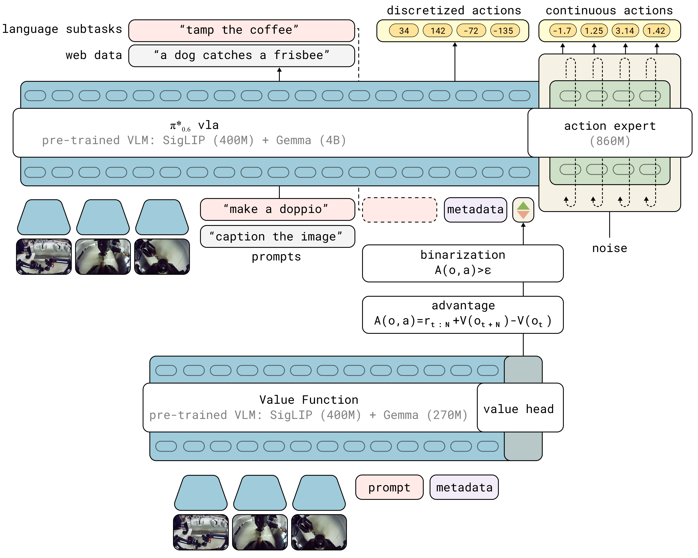
이 온정책(on-policy) 추정량은 보다 고전적인 오프정책(off-policy) Q-함수 추정량보다 덜 최적이지만, 모방 학습(imitation learning)에 비해 상당한 개선을 가능하게 하면서도 간단하고 매우 신뢰할 수 있음을 발견했다. 우리의 방법은 향후 연구에서 오프정책 추정량을 수용하도록 확장될 수 있다.
IV-B 어드밴티지 조건을 통한 정책 추출 (Policy extraction via advantage conditioning)
가치 함수 을 얻고 나면, 이 가치 함수를 사용하여 개선된 정책을 학습할 방법이 필요하다. 이를 정책 추출(policy extraction)이라고 한다. 우리의 설정에서 효과적인 정책 추출 방법은 몇 가지 기준을 충족해야 한다. 첫째, 초기 시연, 전문가 개입, 그리고 최신 정책과 이전 정책 모두로부터 얻은 자율 에피소드로 구성된 다양한 오프정책 데이터를 효과적으로 활용해야 한다. 이는 오프라인 강화학습(offline RL) 방법들이 직면한 과제와 밀접하게 관련되어 있다 [LangeBatchRL, levine2020offline]. 둘째, 확장 가능해야 하며, 액션을 생성하기 위해 플로우 매칭이나 확산(diffusion)을 사용하는 모델을 포함하여 대규모 VLA 모델에 쉽게 적용할 수 있어야 한다. 셋째, 좋은(최적에 가까운) 데이터와 나쁜(서브옵티멀한) 데이터 모두를 효과적으로 활용해야 하며, 이는 자율적인 경험을 사용하여 정책을 개선하고자 할 때 중요하다.
정책 추출을 위한 기존 방법 중 정책 그래디언트(policy gradient) 방법(정규화된 정책 그래디언트 및 재매개변수화된 그래디언트 포함)이 아마도 가장 널리 사용되지만 [schulman2017proximal, haarnoja2018sac], 이러한 방법은 다루기 쉬운 로그 우도(log-likelihood)를 쉽게 제공하지 않는 플로우 매칭 모델에 적용하기 어려워 현대적인 VLA 아키텍처로 확장하기 어렵다(VI절의 비교 참조). 대안은 AWR [peng2019advantage, wangCRR, kostrikov2022offline]과 같이 행동 정책에 대한 정규화를 암묵적으로 제공하고 간단한 (중요도 가중) 지도 학습 목적 함수를 사용하는 가중 회귀(weighted regression) 방법을 사용하는 것이다. 그러나 이러한 방법은 데이터의 상당 부분을 폐기하거나 가중치를 크게 낮추어, 사실상 일종의 필터링된 모방 기술을 구현한다. 대신, 우리는 정책이 지도 학습을 통해 모든 데이터에 대해 학습되지만, 어드밴티지에 기반하여 액션이 얼마나 최적(optimal)인지를 나타내는 추가 입력이 주어지는 어드밴티지 조건부(advantage conditioning) [Kumar2019RewardConditionedPolicies] 변형을 사용한다. 이는 결과 궤적의 어떤 함수를 정책의 조건으로 제시할 것을 제안하는 문헌의 다양한 방법들과 밀접하게 관련되어 있다 [Schmidhuber2019UpsideDownRL, Brandfonbrener2022RCSL].
우리 방법의 구체적인 공식화는 CFGRL [Frans2025DiffusionGuidance]과 가장 밀접하게 관련되어 있다. III절의 공식화를 바탕으로, 베이즈 정리(Bayes rule)를 적용하여 정책 개선 확률을 로 재작성할 수 있다. 이를 우리의 설정에 적용하고 언어 조건을 포함하면, III절에서 설명한 개선된 정규화 정책에 대한 대안적인 폐쇄형을 다음과 같이 얻을 수 있다.
| (2) |
특별한 경우인 에 대해, 이다.
따라서 정책이 와 을 모두 표현할 수 있도록 학습시킨다면, 개선 확률인 을 명시적으로 표현할 필요 없이 을 표현할 수 있다. 이 원리는 분류기 없는 가이드(classifier-free guidance)의 접근 방식과 유사하며, 여기서 확산 모델(diffusion model)은 조건화 변수 [Frans2025DiffusionGuidance]가 있는 경우와 없는 경우 모두에 대해 데이터를 모델링하도록 학습된다. 우리는 개선 지표 가 델타 분포를 따른다고 가정한다
태스크에 따른 개선 임계값 을 사용한다. 이 임계값을 통해 최적성 지표를 제어할 수 있으며, 학습 후 개선 조건부 분포를 더 선명하게 만들기 위해 감쇠 인자 을 찾아야 할 필요성을 최소화한다.222이전 연구 [Frans2025DiffusionGuidance]에서는 분류기 없는 가이드(CFG)에서처럼 테스트 시점에 을 일률적으로 선택하고 를 튜닝했다. 그러나 높은 CFG 가중치는 행동 분포를 지원 범위의 극단으로 몰고 가 공격적인 행동을 유발할 수 있으며, 모델의 자기회귀(autoregressive) 부분에는 영향을 미치지 않는다. 우리는 그 대신 임계값 를 사용하여 규제화(regularization)와 최적성 사이의 절충안을 찾는 것이 좋은 결과를 얻기에 더 쉽다는 것을 발견했다. 그러면 정책 목적 함수는 다음 음의 로그 우도(negative log-likelihood)를 최소화하는 것에 대응된다:
| (3) | ||||
어드밴티지 값 은 이전 섹션의 가치 함수로부터 얻어지며, 은 절충 하이퍼파라미터이다. 실제 적용 시, 데이터셋 는 모든 데모와 자율 태스크 시도를 포함하여 지금까지 수집된 모든 데이터로 구성되므로, 기준 정책 은 인간의 행동과 이전에 배포된 정책들의 혼합이 된다. 인간의 교정을 포함하기 위해, 자율 롤아웃 중에 인간의 교정으로 제공된 행동에 대해서는 (즉, 양수)를 강제하는 것이 유용함을 발견했다. 인간 전문가가 항상 좋은 교정 행동을 제공한다고 가정한다면 이러한 선택은 합리적이다. 섹션 V에서 논의하겠지만, 실제 당사의 VLA 모델은 이산형(discrete) 출력과 연속형(continuous) 출력을 모두 생성하며, 연속형 분포는 플로우 매칭(flow matching)을 통해 표현된다. 따라서 실제 학습 목적 함수는 이산형 값에 대한 우도와 연속형 값에 대한 플로우 매칭 목적 함수를 결합한다.
실제 적용 시, 우리는 전체 사전 학습 데이터셋에서 을 표현하도록 하나의 모델을 사전 학습시킨 다음, 각 태스크에 대해 온폴리시(on-policy) 롤아웃(및 선택적으로 전문가의 교정 개입)을 통해 당사 방법의 반복을 1회 이상 수행한다.
IV-C 방법 요약
알고리즘 1에서 당사 전체 방법의 개요를 제공한다. 이 섹션의 시작 부분에서 요약한 바와 같이, 이 방법은 세 가지 서브루틴을 적용하여 완전히 정의할 수 있다. 즉, 자율 롤아웃을 통한 데이터 수집(전문가의 선택적 교정 개입 포함), 식 1에 따른 가치 함수 학습, 식 3에 따른 정책 학습이다. 방법의 서로 다른 단계 사이에서 변경되는 유일한 것은 각 서브루틴에 제공되는 데이터뿐이다. 사전 학습 단계에서는 모든 이전 데모 데이터를 사용하고, 각 기술 에 대한 스페셜리스트(specialist)의 학습 과정에서는 추가적인 자율 데이터를 사용한다. 실제 적용 시 스페셜리스트는 사전 학습된 모델로부터 미세 조정(fine-tuning)되는 반면, 최종 제너럴리스트(generalist)는 처음부터 학습된다. 방법에 대한 추가적인 세부 사항은 부록 A-F에 제공된다.
V 구현, 모델 및 시스템 세부 정보
우리는 이라 부르는 VLA를 사용하여 Recap을 구체화한다. 은 VLA를 기반으로 하며, 이는 몇 가지 개선 사항을 적용하여 VLA [black2025pi05]를 발전시킨 것으로, 동반된 모델 카드 [pi06model]에 자세히 설명되어 있다. 은 추가적으로 이진화된 어드밴티지 지표 에 조건화하는 기능을 추가하여, Recap을 통한 RL 학습에 적합하게 만든다. 모델 아키텍처는 그림 3에 나와 있다. 우리는 섹션 IV-A에 기술된 방법에 따라 VLA와 함께 가치 함수를 학습시킨다. 이 가치 함수 역시 VLM에서 초기화된다. 이 가치 함수와 VLA를 Recap으로 학습시켜 최종 모델을 얻으며, 이를 이라 부른다. 이 섹션에서는 먼저 우리 모델의 설계와 가치 함수의 어드밴티지 값을 사용하도록 모델을 확장하는 방법을 자세히 설명한 다음, 보상 함수와 가치 함수에 대해 설명하고, 마지막으로 우리 구현에서의 학습 및 데이터 수집 프로세스를 상세히 기술한다.
V-A 모델
모델 [pi06model]은 플로우 매칭을 통해 청크 단위의 행동 분포를 유연하게 표현하고 고수준 정책 추론을 위한 중간 텍스트를 생성할 수 있는 모델에서 파생되었다. 이 모델은 지식 절연(Knowledge Insulation, KI) 학습 절차 [driess2025knowledge]를 사용하는데, 이는 연속형 행동과 이산화된 토큰(FAST [pertsch2025fast]를 통해 이산화된 행동 포함)에 대해 전체 모델을 엔드투엔드로 학습시키는 동시에, 그래디언트 차단(stop gradient)을 사용하여 플로우 매칭 행동 전문가(action expert)가 모델의 나머지 부분에 영향을 미치지 않도록 한다. 사전 학습에는 로봇 데이터와 웹에서 수집한 시각-언어 공동 학습(co-training) 데이터를 모두 사용한다.
은 여러 면에서 을 개선한다. (i) 사전 학습 데이터셋이 여러 로봇 플랫폼의 추가 데이터로 보강되었다. (ii) 기본 VLM은 Gemma 3 [gemmateam2025gemma3technicalreport] 4B 모델이다. (iii) 행동 전문가의 크기가 860M 매개변수로 증가했다.
모델은 으로 나타낼 수 있으며, 여기서 은 카메라 이미지 , 로봇의 구성 을 포함하고, 는 전체 태스크 프롬프트 (예: "에스프레소 만들어 줘")와 태스크 수행 방식을 추가로 조절하는 메타데이터를 제공하는 추가 언어 입력 으로 구성된 언어 입력이다. 모델은 행동 생성만을 위해 플로우 매칭으로 학습되었지만 모델의 나머지 부분에 있는 활성화(activation)에 어텐션을 가질 수 있는 전용 가중치 세트(860M 매개변수)인 별도의 "행동 전문가"를 사용하여 50 Hz로 관절 각도 및 그리퍼 명령으로 구성된 행동 청크 을 생성한다. 또한 모델은 고수준 의사결정에 사용되는 다음에 예측된 하위 태스크(예: "커피 잔 들어 올리기")의 텍스트 표현을 포함하는 토큰화된 이산형 출력 을 생성한다. 행동은 이후에 생성되므로, 행동 생성은 이 예측된 하위 태스크에 효과적으로 조건화되어 고수준 가이드를 제공한다. 추론 시 하위 태스크 예측은 행동 생성보다 낮은 주파수로 실행된다. 학습 중에 모델은 KI 레시피 [driess2025knowledge]의 일부로 FAST 토크나이저 [pertsch2025fast]를 사용하여 행동 청크의 토큰화된 표현 도 예측한다. 우리는 이러한 이산화된 행동을 으로 표시한다. 행동 전문가는 이를 입력으로 받지 않으므로 이산형 행동과 연속형 행동은 독립적으로 예측된다. 이는 최종 학습 로그 우도 로 이어진다. 를 먼저 예측하므로, 이 로그 우도를 다음과 같이 인수분해할 수 있다:
V-B 어드밴티지 조건화를 통한 에서 로의 전환
어드밴티지에 대한 정보를 정책에 통합하기 위해, 우리는 모델 입력을 확장하여 추가적인 개선 지표를 추가 텍스트 입력으로 포함하도록 하고, 일 때는 "Advantage: positive"를 입력하고, 그렇지 않으면 "Advantage: negative"를 입력한다. VLA 모델은 섹션 V-A에서 설명한 것과 동일하다. 어드밴티지 지표는 학습 시퀀스에서 이후에 나타나지만 (이산형 및 연속형) 행동 이전에 나타나므로 행동 로그 우도만 영향을 받는다. 로그 우도의 연속형 부분은 정확하게 평가할 수 없으며, 대신 플로우 매칭 손실 [lipman2022flow]을 통해 학습된다. (일부 가정 하에) 플로우 매칭과 확산(diffusion) 사이에 밀접한 유사성을 도출할 수 있으며, 후자는 로그 우도의 하한(lower bound)으로 해석될 수 있으므로 [KingaDiffELBO], 우리는 이산형 행동의 로그 우도와 연속형 행동에 대한 플로우 매칭 손실의 합을 전체 행동 우도의 하한으로 대략적으로 정당화할 수 있다:
| (4) |
여기서 , 은 노이즈가 추가된 행동을 나타내고, 는 플로우 매칭 시간 인덱스이며, 은 확산 전문가의 연속형 출력을 나타낸다. 는 손실 가중치 항이다(선택적으로 노이즈에 의존할 수 있음). 손실에 대한 자세한 내용은 부록 A-C에 제공된다.
V-C 보상 정의 및 가치 함수 학습
우리의 목표는 경험으로부터 VLA를 학습시키기 위한 일반적이고 폭넓게 적용 가능한 방법을 개발하는 것이므로, 본질적으로 모든 태스크에 적용할 수 있는 일반적인 희소 보상(sparse reward) 정의를 사용한다. 각 에피소드에 대해, 우리는 해당 에피소드가 성공했는지 여부를 나타내는 라벨을 얻는다. 이 에피소드 수준의 성공 라벨로부터 가치 함수(value function)가 에피소드의 성공적인 완료까지 남은 단계 수의 (음수) 값에 대응하도록 보상을 도출한다. 이는 다음과 같은 보상 함수와 동일하며, 여기서 은 에피소드의 마지막 단계에 대응하고, 은 실패한 에피소드가 낮은 값을 갖도록 보장하기 위해 선택된 큰 상수이다:
| (5) |
이 보상 함수를 통해, 우리는 가치 함수가 성공한 에피소드에 대해서는 성공할 때까지 남은 단계 수의 (음수) 값을 예측하고, 실패한 에피소드에 대해서는 큰 음수 값을 예측하도록 학습시킨다. 실제로는 예측된 값이 사이에 있도록 정규화한다. 전형적인 길이가 매우 다른 다양한 태스크에 대해 학습시키기 때문에, 태스크의 최대 에피소드 길이를 기준으로 태스크별로 값을 정규화한다.
V-D 사전 학습, 데이터 수집 및 경험을 통한 학습
우리 모델의 사전 학습 단계에 사용된 데이터 혼합은 웹의 시각-언어 데이터, 하위 태스크 예측 , 다양한 로봇의 여러 태스크에 대한 저수준 행동(low-level action) 예측을 포함하여 [black2025pi05]에서 사용된 레시피를 크게 따른다. 사전 학습 후 은 섹션 VI의 평가에 사용된 것보다 훨씬 더 많은 태스크를 수행할 수 있음을 밝혀둔다. 사전 학습 동안, 우리는 먼저 동일한 데이터셋에서 가치 함수를 학습시켜 각 태스크의 성공적인 완료까지 남은 단계 수의 (음수) 값을 예측한다. 그런 다음 우위 기반 개선 지표(advantage-based improvement indicator) 을 결정하는 데 사용되는 태스크별 개선 임계값 를 추정한다. 우리는 을 태스크 에 대해 가치 함수가 예측한 값의 백분위수로 설정한다. 그런 다음 VLA 학습 중에 가치 함수를 실시간(on-the-fly)으로 실행하여 각 예시에 대한 을 추정하고, 이를 사용하여 를 기반으로 을 계산한다. 은 섹션 V-A에서 설명한 대로 의 입력으로 포함된다. 가치 함수에 비교적 작은 VLM 백본(670M)을 사용하기 때문에, 가치 함수의 실시간 추론은 VLA 학습 중에 최소한의 추가 비용만 발생시킨다.
사전 학습 후 우리는 대상 태스크에 대한 정책 개선 루프를 시작한다. 먼저 대상 태스크 에 대한 데모 데이터 로 을 미세 조정(finetune)한다. 이 단계에서는 지표 을 True로 고정하는데, 이것이 약간 더 나은 결과로 이어진다는 것을 발견했으며, 따라서 이 단계는 지도 미세 조정(SFT)에 대응한다. 이는 초기 정책 를 생성하며, 이는 에 추가되는 추가 데이터를 수집하는 데 사용된다. 일부 에피소드는 완전히 자율적으로 수집되지만, 일부는 개입하여 보정을 제공할 수 있는 전문 원격 조종자(teleoperator)에 의해 모니터링된다. 이러한 보정은 정책에 치명적인 실패를 피하는 방법이나 실수로부터 회복하는 방법을 보여줄 수 있다. 그러나 보정만으로는 모든 문제를 해결하기 어렵다는 점에 유의해야 한다. 자율 주행 중에 개입하는 것은 흐름을 깨는 이벤트이며, 전문 인간 조종사라 할지라도 일관된 보정 품질을 보장하거나 전체적인 속도와 같은 행동의 미묘한 측면을 개선할 수는 없다. 따라서 보정은 이론 [ross2011dagger]과는 대조적으로, 그 자체로 최적의 지도를 제공하기보다는 큰 실수를 바로잡고 탐색의 어려움을 극복하는 데 더 도움이 된다. 섹션 IV-B에서 언급했듯이 모든 보정에 대해 을 강제하지만, 그렇지 않은 경우 보정 제공 여부와 관계없이 전체 에피소드(자율 부분과 보정 부분 모두)가 선택적으로 데이터셋 에 추가된다.
데이터 수집 후, 우리는 지금까지 태스크를 위해 수집된 모든 데이터에 대해 가치 함수를 미세 조정하고, 사전 학습에서와 동일한 절차를 사용하여 업데이트된 지표 으로 정책을 미세 조정한다. 가치 함수와 정책은 모두 직전 반복(iteration)의 정책과 가치 함수가 아니라 사전 학습된 체크포인트로부터 미세 조정된다. 우리는 이것이 여러 반복에 걸쳐 드리프트(drift)를 방지하는 데 유용하다는 것을 발견했으나, 마지막 모델로부터 일관되게 미세 조정함으로써 좋은 결과를 얻는 것도 가능할 수 있다.
필요에 따라 이 과정을 여러 번 반복할 수 있지만, 실제로는 단 한 번의 반복만으로도 결과가 크게 향상되는 경우가 많다는 것을 발견했다.

VI 실험적 평가
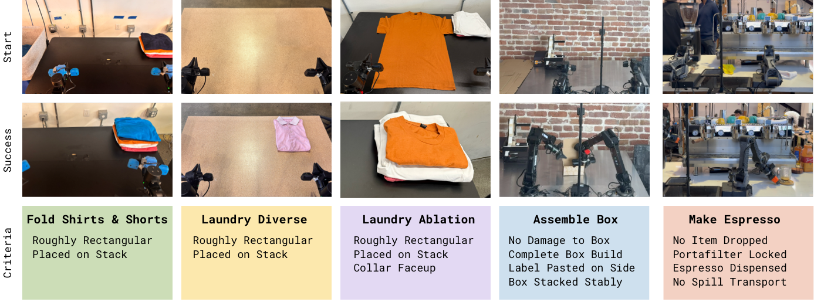
실험적 평가에서, 우리는 에스프레소 음료 만들기, 다양한 세탁물 접기, 상자 조립과 같은 일련의 현실적인 태스크에 대해 모델을 학습시키기 위해 Recap을 사용한다. 각 태스크는 5분에서 15분 소요되는 다단계 과정, 복잡한 조작 행동(제한된 힘 조작, 액체 따르기, 천 및 판지 조작 등), 높은 처리량(throughput)을 제공하기 위한 빠른 실행을 요구한다. 그림 5에서 우리 실험에 사용된 로봇 플랫폼을 보여준다. 아래에서 태스크와 베이스라인에 대한 자세한 내용을 제공하고, 이어서 정량적 실험을 진행한다.
VI-A 평가 태스크
우리의 정량적 평가 및 비교는 각각 개별 태스크 변형이 있는 세 가지 광범위한 태스크 범주인 세탁물 접기, 커피 만들기, 상자 조립을 사용한다. 태스크들을 아래에 요약하며, 그림 6에 예시가 나와 있다.
세탁물 (티셔츠 및 반바지). 이는 논문 [black2024pi_0]의 표준 세탁물 접기 태스크이다. 이 태스크는 가변적인 초기 조건의 바구니에서 티셔츠나 반바지를 꺼내어 평평하게 펴고 접는 과정을 수반한다. 성공하려면 200초 이내에 옷 한 벌을 접어서 테이블 오른쪽 상단 모서리에 쌓아야 한다.
세탁물 (다양한 품목). 다양한 세탁물 태스크는 수건, 버튼다운 셔츠, 스웨터, 청바지, 티셔츠, 반바지, 폴로셔츠, 스커트, 긴소매 셔츠, 양말, 속옷을 포함한 11가지 품목 유형을 고려하여 훨씬 더 다양한 품목을 접어야 한다. 우리 실험에서 편차가 적은 메트릭을 얻기 위해, 가장 까다로운 품목 중 하나인 버튼다운 셔츠에 대한 성능을 측정한다. 그러나 정책은 모든 품목에 대해 학습되며, 첨부된 비디오는 다양한 의류에 대한 결과를 보여준다. 성공은 500초 이내에 대상 품목을 올바르게 접어서 테이블 위의 더미에 올려놓는 것으로 정의된다.
세탁물 (특정 실패 제거). 세탁물 접기 태스크의 최종 버전은 소거법(ablation) 실험에 사용하기 위해 훨씬 더 구조화된 설정을 고려하며, 이 태스크는 고정되고 평평하게 펴진 초기 조건에서 단일 주황색 티셔츠를 접는 것을 포함한다. 우리는 성공에 가장 높은 비중을 두며, 200초 이내에 깃(collar)이 항상 위를 향하도록 셔츠를 올바르게 접어야 하는 엄격한 성공 기준을 적용한다. 우리는 이 태스크가 Recap이 RL을 통해 특정 원치 않는 행동(이 경우 깃이 위가 아닌 아래를 향하게 놓는 것)을 제거할 수 있는지 평가하는 데 유용하다는 것을 발견했다.
카페 (더블 샷 에스프레소). 우리는 상업용 에스프레소 머신으로 커피를 만드는 도전적인 장기 호라이즌(long-horizon) 태스크에서 정책을 평가한다. 우리 카페 정책은 많은 음료(라떼, 아이스 아메리카노, 에스프레소 등)를 만들 수 있고 수건으로 에스프레소 머신을 청소할 수도 있지만, 정량적 실험을 위해 더블 에스프레소 샷 태스크에 집중한다. 이는 포타필터를 집어 들고, 그라인더에 올려놓고 원두를 갈아 넣고, 갈린 원두를 탬핑하고, 포타필터를 에스프레소 머신에 장착하고, 잔을 가져와 에스프레소 샷을 완전히 추출한 다음 서빙하는 과정을 수반한다. 성공은 치명적인 실수(포타필터를 떨어뜨리거나 커피를 쏟는 등) 없이 200초 이내에 모든 단계를 완료하는 것으로 측정된다.
상자 조립 (Box assembly). 우리는 실제 공장 배포 시나리오에서 포장 상자를 조립하는 문제를 통해 정책을 평가한다. 상자 조립은 납작한 판지 시트에서 시작하여 판지 상자를 접고, 여기에 라벨을 부착한 다음, 상자를 상자 보관함(crate)의 적절한 위치에 놓는 과정을 포함한다. 정량적 실험을 위해 우리는 작업의 모든 부분에 집중하며, 전체 성공 기준은 600초 이내에 납작한 상태에서 조립 및 적재된 상자로 만드는 것으로 정의한다.
VI-B 비교 및 소제 분석 (Comparisons and Ablations)


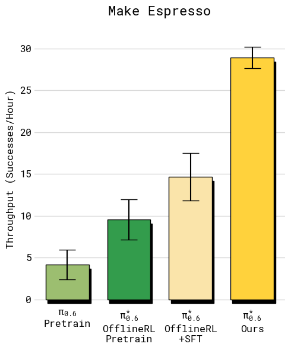
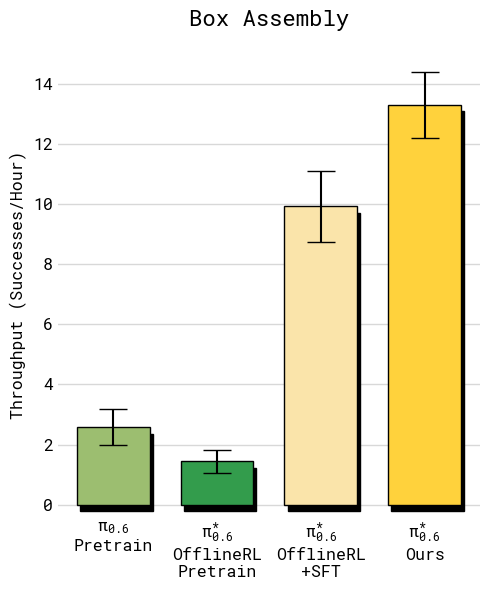
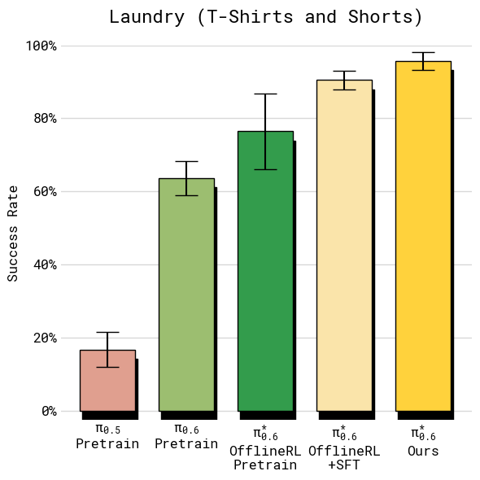

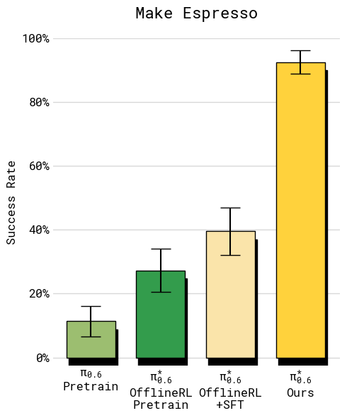

우리는 Recap을 여러 베이스라인과 비교한다:
사전 학습된 [black2025pi05]. 이 베이스라인은 RL을 사용하지 않으며 Recap을 활용하지 않는다.
사전 학습된 [pi06model]. 이 모델은 어드밴티지 지표(advantage indicator) 를 포함하지 않으며, 지도 학습(supervised learning)으로 사전 학습된다.
RL 사전 학습된 . 이 모델은 가치 함수(value function)와 함께 RL로 사전 학습되며, 섹션 V-D에서 설명한 대로 어드밴티지 지표 을 포함한다.
오프라인 RL + SFT. 이 모델은 기본 사전 학습된 체크포인트를 대상 작업의 데모 데이터로 미세 조정(finetuning)하여 학습된다. 모든 데모에 대해 어드밴티지 값이 True로 고정되어 있기 때문에 이 미세 조정을 "SFT"라고 부른다. 우리는 오프라인 RL 사전 학습된 모델과 고품질 SFT의 조합이 표준 SFT(오프라인 RL 사전 학습 없음)보다 우수한 성능을 보이며, 로봇 상의 데이터(on-robot data)를 활용한 RL의 좋은 출발점을 제공한다는 것을 발견했다.
(우리 방식). 이는 자율 롤아웃(autonomous rollouts)과 전문가 교정(expert corrections)을 모두 포함하여 대상 작업에서 Recap으로 학습된 최종 모델이다. 기본적으로 우리는 로 평가한다. 일부 실험에서는 CFG를 사용한 추론도 고려하며, 이는 에 해당한다.
우리는 또한 우리의 어드밴티지 조건부 접근 방식(advantage-conditioned approach)과의 비교를 위해 문헌에 소개된 두 가지 대안적 정책 추출(policy extraction) 방법을 고려한다. 두 방법 모두 Recap과 동일한 로봇 상의 데이터를 사용하지만 다른 정책 학습 방법을 사용한다:
AWR. 동일한 사전 학습된 모델 (어드밴티지 조건화 없음)에서 시작하여, 가치 함수에서 추출한 어드밴티지를 기반으로 어드밴티지 가중 회귀(advantage weighted regression) [peng2019advantage]를 사용하여 미세 조정한다.
PPO. 우리는 단일 단계 확산 목적 함수(single step diffusion objective)를 기반으로 우도(likelihood)를 계산하고, SPO [xie2025simplepolicyoptimization]를 따라 PPO 제약 조건의 대안적 정의를 사용하는 DPPO/FPO [Ren2025DPPO, mcallister2025fpo]의 변형을 구현한다 (자세한 내용은 부록 A-D 참조).
VI-C 정량적 결과
우리는 평가에서 처리량(throughput)과 성공률(success rate)이라는 두 가지 지표를 사용한다. 처리량은 시간당 성공적인 작업 실행 횟수를 측정하므로 속도와 성공률을 모두 하나의 실질적으로 유의미한 양으로 포착한다. 성공률은 성공한 에피소드의 비율을 측정하며, 사람이 제공한 주석(annotation)에서 도출된다. 평가자들은 여러 품질 지표에 따라 에피소드를 판단하도록 요청받으며, 우리는 이러한 품질 지표들을 종합하여 성공 여부 라벨을 생성한다.
VI-C1 Recap은 정책을 얼마나 향상시키는가?
이 질문에 답하기 위해 그림 7과 8에 주요 정량적 결과를 제시한다. 모든 작업에서 최종 모델은 기본(지도 학습) 모델, RL 사전 학습된 모델, 그리고 오프라인 RL + SFT 모델에 비해 성능이 크게 향상되었다. 로봇 상의 데이터를 포함함으로써(오프라인 RL + SFT에서 최종 모델로의 향상) 다양한 빨래 접기 및 에스프레소 작업에서 처리량이 두 배 이상 증가했으며, 실패율은 약 2분의 1로 감소했다. 더 쉬운 빨래 작업(티셔츠 및 반바지)의 경우, 성공률은 SFT 단계 이후 이미 최대치에 가까웠지만, 최종 모델을 통해 처리량은 여전히 상당한 차이로 증가했다.
다양한 빨래 작업을 제외한 모든 작업에서 최종 모델의 성공률은 90% 이상 범위에 있다. 첨부된 비디오에서 볼 수 있듯이, 이는 사무실에서 에스프레소 음료를 만들거나 공장에서 상자를 조립하는 것과 같은 실제 환경에서 실용적으로 사용할 수 있게 해준다. 상자 조립 작업의 경우, 그림 8(오른쪽)은 상자 시트 집기, 상자 만들기, 상자에 라벨 붙이기, 상자 보관함의 빈 공간에 놓기 등 네 가지 단계에 걸친 작업 성공률의 세부 분석을 포함한다. 는 다른 모델들과 비교하여 모든 단계에서 더 높은 성공률을 달성한다. 이러한 단계에서 발생하는 대부분의 실패는 정책의 실행 시간이 초과되었기 때문에 발생한다. 첨부된 비디오에는 각 작업이 여러 시간 동안 실행되는 타임랩스 영상이 포함되어 있다.

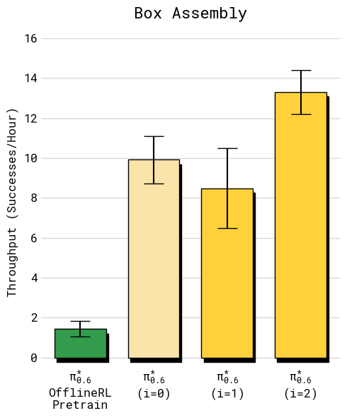
VI-C2 여러 반복 학습에 걸쳐 Recap은 을 얼마나 향상시키는가?
다음으로 Recap을 통한 학습이 데이터 수집 및 학습의 여러 반복 과정을 거치면서 어떻게 정책을 향상시키는지 밝힌다. 우리는 티셔츠 및 반바지 접기 작업과 상자 조립 작업을 연구한다. 티셔츠 접기 작업의 경우, 우리 방법이 강화학습(RL)만으로 정책을 얼마나 잘 향상시킬 수 있는지 평가하기 위해 인간의 개입 없이 자율 평가로만 수집된 데이터를 사용하여 2회 반복에 걸쳐 정책 향상을 수행한다. 각 반복마다 4대의 로봇에서 300개의 궤적을 수집한다. 상자 조립은 자율 시도와 전문 원격 조종사의 개입이 포함된 시도를 모두 사용하며, 각 반복마다 600회의 자율 시도와 360회의 개입 시도를 진행한다.
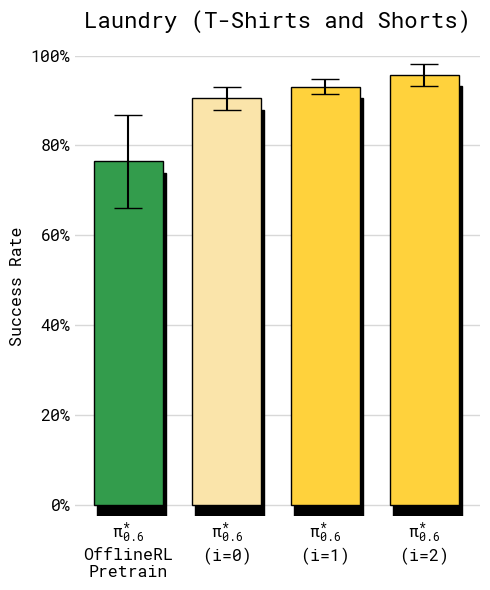
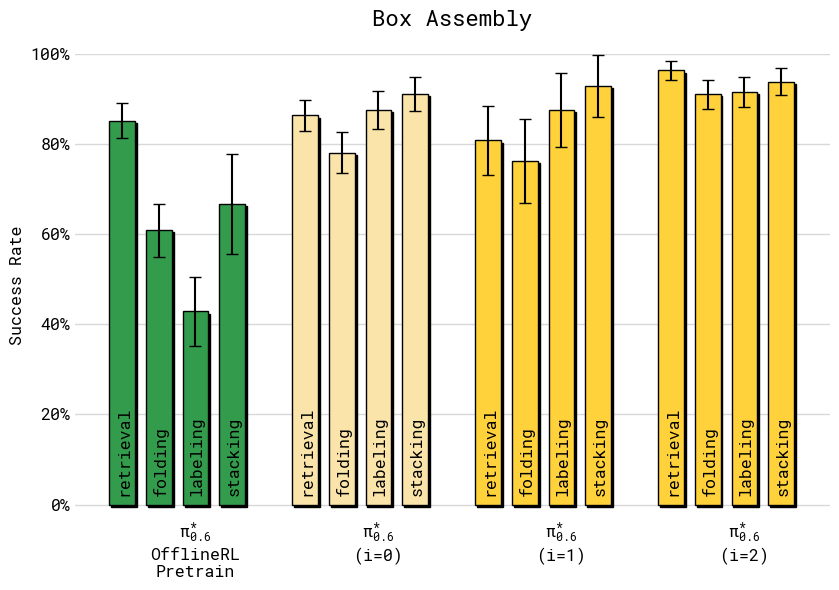
그림 9에 반복 학습에 따른 처리량을 플롯하여, 각각 , 로 표시된 Recap의 두 반복 단계를 비교한다. (Ours)로 표시된 최종 반복은 이전 섹션에서 제시된 이러한 작업들에 대한 전반적인 최적의 결과에 해당한다. 또한 지도 미세조정(SFT)을 적용한 오프라인 강화학습 사전 학습 모델을 사용하는 초기 데이터 수집 정책과도 비교한다. 두 작업 모두에서 는 두 번의 반복에 걸쳐 향상된다. 빨래 작업에서는 처리량이 전반적으로 향상되는 꾸준한 개선을 볼 수 있다. 장기 지평(long-horizon) 상자 조립 작업의 경우, 유의미한 향상을 얻기 위해 더 많은 데이터가 필요하지만, 두 번째 반복 이후에는 처리량이 2 향상되는 것을 확인할 수 있다.

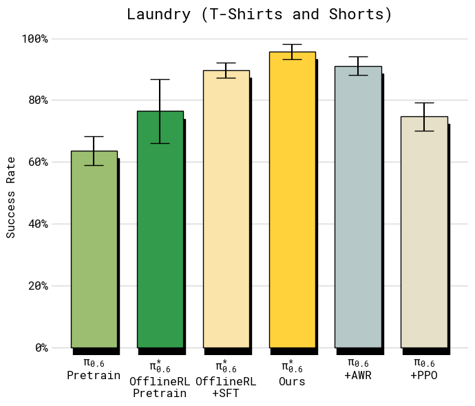
또한 그림 10에 반복 학습에 따른 성공률을 나타낸다. 빨래 작업의 경우, 첫 번째 반복에서 이미 성공률이 90% 이상으로 올라가는 반면, 두 번째 반복은 주로 처리량을 향상시킨다. 상자 조립 작업의 경우, 두 반복 모두에서 성공률이 명확하게 향상되는 것을 볼 수 있다. 여전히 일부 실패(특히 마지막에 상자를 적재함에 놓을 때)가 존재하지만, 최종 정책은 제한 시간 초 내에 상자를 접고 라벨을 붙이는 작업 모두에서 약 90%의 성공률을 달성한다.
VI-C3 Recap의 어드밴티지 조건부 정책 추출(advantage-conditioned policy extraction) 방법은 다른 방법들과 비교하여 어떠한가?
섹션 IV-B의 어드밴티지 조건부 정책 추출 방법을 기존 문헌의 다른 방법인 AWR 및 PPO와 비교한다. 이 비교를 위해 티셔츠 및 반바지 작업을 사용한다. 통제된 비교를 보장하기 위해, 최종 모델을 학습하는 데 사용된 것과 동일한 데이터를 이 비교에 사용한다. 이는 베이스라인 모델들이 Recap을 실행하는 동안 수집된 더 좋은 데이터에 접근할 수 있으므로 베이스라인에 약간 유리하게 작용한다. 결과는 그림 11에 나와 있다. AWR과 PPO 모두 합리적인 결과를 얻을 수 있지만, 두 방법 모두 우리 방법에는 크게 미치지 못하며, 오프라인 강화학습 + SFT 모델보다 향상되는 데 어려움을 겪는다. PPO의 경우, 이 오프폴리시(off-policy) 설정에서 학습을 안정화하기 위해 작은 신뢰 영역 제약 조건()을 사용해야 했으며, 이로 인해 학습은 안정적이었으나 좋은 성능을 달성하지는 못했다. AWR은 합리적인 성공률을 달성할 수 있지만, 정책의 속도가 훨씬 느려져 처리량이 낮아진다.
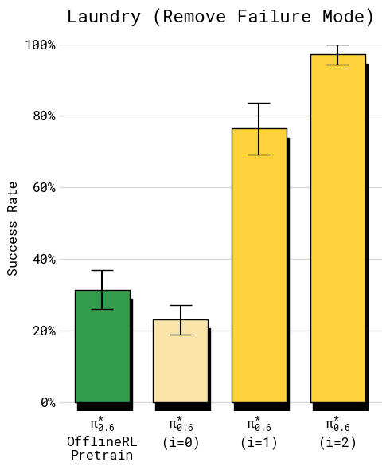
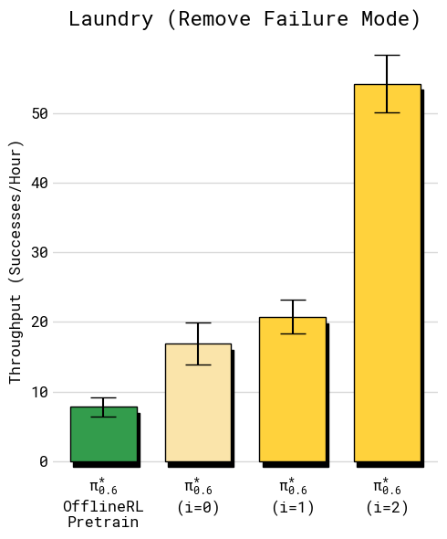
VI-C4 Recap은 비교적 적은 데이터로 정책 행동을 크게 변경하고 실패 모드를 제거할 수 있는가?
이전 실험들은 정책 성능의 종합적인 엔드투엔드(end-to-end) 평가에 초점을 맞추었지만, 특정 실패 모드에 초점을 맞추어 Recap을 통한 강화학습이 정책에서 특정 실수를 제거할 수 있는지 검토할 수도 있다. 이 질문에 답하기 위해, 칼라가 중앙에 오고 위를 향하도록 티셔츠를 접어야 하는 엄격한 성공 기준을 가진 빨래 작업 버전을 사용한다. 각 에피소드는 베이스라인 오프라인 강화학습 + SFT 정책이 종종 올바르게 접는 데 실패하도록 셔츠가 테이블 위에 평평하게 놓이는 특정 적대적 조건으로 초기화된다. 그림 12에 나타난 바와 같이, 이 설정에서 Recap을 2회 반복 적용(각 반복마다 개의 궤적 수집)하면 의 비율로 빠르게 성공하는 정책이 도달한다. 따라서 개입 데이터나 추가 데모 없이 전적으로 강화학습을 통해 학습할 때도 Recap이 특정 실패 모드를 제거하는 데 효과적일 수 있다고 결론지을 수 있다.
VII 논의 및 향후 연구
실제 작업에서 사람과 동일한 강인함, 속도, 유연함을 달성할 수 있는 정책을 학습시키는 것은 로봇 러닝 분야에서 큰 과제이다. 본 논문에서는 DAgger 스타일의 코칭과 강화학습의 결합을 통해 경험으로부터 학습하는 방식이 이러한 과제를 어떻게 해결하기 시작할 수 있는지 논의했다. 자율 시도, 보상 피드백, 인간의 개입을 통해 VLA를 학습시키는 방법인 Recap을 설명하고, Recap으로 학습된 모델인 을 에스프레소 음료 만들기, 다양한 빨래 접기, 상자 조립과 같은 일련의 실제 작업에 적용한 결과를 제시한다. Recap의 핵심은 가치 함수를 통한 정책 추출을 위해 어드밴티지 조건화를 사용하여 VLA 정책의 확장 가능한 학습에 적합한 강화학습 방법이다. 이 강화학습 방법을 위한 데이터는 자율 롤아웃과 인간 개입의 조합으로 수집되며, 개입을 통해 실수를 수정하는 동시에 자율 데이터를 통해 행동의 세부 사항을 미세조정한다. 우리의 실험은 Recap이 VLA의 성공률과 처리량을 모두 향상시킬 수 있으며, 일부 더 어려운 작업에서는 처리량을 두 배 이상 늘리고 실패 횟수를 대략 2로 줄일 수 있음을 보여준다.
Recap에는 개선할 수 있는 여러 방향이 존재한다. 첫째, 우리 시스템은 완전히 자율적이지 않다. 보상 피드백, 개입, 에피소드 리셋을 위해 인간의 라벨링과 노력에 의존한다. 다수의 선행 연구들이 이러한 구성 요소를 자동화하는 방법을 탐구해 왔으며 [zhu2020ingredients, sharma2021autonomous], VLA는 예를 들어 상위 수준 정책 [shi2025hi]을 사용하여 장면 리셋을 추론함으로써 더 자동화된 데이터 수집을 제공하는 새로운 방법을 제시한다. 둘째, 우리 시스템은 탐색에 접근하는 방식이 다소 단순하다. 탐색은 주로 탐욕적(greedy)이며, 새로운 솔루션을 탐색하기 위해 정책의 확률성과 인간의 개입에 의존한다. 이는 초기 모방 학습 정책이 이미 합리적인 행동을 취할 때는 타당하지만, 더 정교한 탐색 방법을 통해 개선할 여지가 많다. 마지막으로, Recap은 데이터가 수집됨에 따라 정책과 가치 함수가 실시간으로 업데이트되는 완전한 온라인 강화학습 루프를 실행하는 대신, 반복적인 "오프라인" 업데이트(즉, 데이터 배치를 수집하고 모델을 재학습한 후 반복하는 방식)를 수행한다. 우리는 편의상 이러한 결정을 내렸지만, 우리의 접근 방식을 완전히 동시적인 온라인 강화학습 프레임워크로 확장하는 것은 향후 연구를 위한 유망한 방향이다.
더 넓게 보면, 강화학습으로 VLA를 학습시키는 것은 실제 사용 사례에 적합한 성능 수준에 도달하는 가장 직접적인 경로일 것이다. VLA를 사용한 강화학습은 고용량 모델의 대규모 강화학습 학습의 어려움부터 샘플 복잡도, 자율성, 지연된 피드백에 이르기까지 많은 과제를 안겨준다. 소규모 시스템이나 LLM과 같은 "가상" 도메인을 위해 설계된 기존 강화학습 프레임워크가 좋은 출발점을 제공할 수 있지만, 강화학습을 VLA 학습을 위한 실용적인 도구로 만들기 위해서는 더 많은 연구가 필요할 것이다. 우리의 연구가 이 방향으로 나아가는 의미 있는 발걸음이 되기를 바란다.
감사의 글
데이터 수집, 평가, 물류 및 비디오 녹화를 도와준 로봇 운영자들과 로봇 유지보수 및 수리를 담당해 준 기술자들에게 감사드린다. 전체 기여도 명세는 부록 A-A을 참조하라.
부록 A
A-A 기여도
데이터 수집 및 운영. Michael Equi, Chelsea Finn, Lachy Groom, Hunter Hancock, Karol Hausman, Rowan Jen, Liyiming Ke, Marinda Lamb, Vishnu Mano, Suraj Nair, Charvi Sharma, Laura Smith, Will Stoeckle, Anna Walling, Blake Williams.
어노테이션 및 보조 데이터. Chelsea Finn, Catherine Glossop, Hunter Hancock, Brian Ichter, Rowan Jen, Liyiming Ke, Chandra Kuchi, Karl Pertsch, Laura Smith, Will Stoeckle, Quan Vuong, Anna Walling.
정책 학습 및 연구. Ashwin Balakrishna, Kevin Black, Danny Driess, Michael Equi, Yunhao Fang, Chelsea Finn, Catherine Glossop, Karol Hausman, Gashon Hussein, Brian Ichter, Liyiming Ke, Sergey Levine, Yao Lu, Suraj Nair, Karl Pertsch, Allen Z. Ren, Lucy Shi, Laura Smith, Jost Tobias Springenberg, Kyle Stachowicz, Alex Swerdlow, Marcel Torne, Quan Vuong, Lili Yu, Zhiyuan Zhou.
정책 인프라. Kevin Black, Karan Dhabalia, Danny Driess, Michael Equi, Liyiming Ke, Adrian Li-Bell, Suraj Nair, Allen Z. Ren, Laura Smith, Jost Tobias Springenberg, Kyle Stachowicz, Alex Swerdlow, Haohuan Wang, Ury Zhilinsky, Zhiyuan Zhou.
로봇 하드웨어. Ali Amin, Raichelle Aniceto, Grace Connors, Adnan Esmail, Thomas Godden, Ivan Goryachev, Tim Jones, Ben Katz, Devin LeBlanc, Mohith Mothukuri, Sukwon Yoo.
로봇 인프라. Ken Conley, James Darpinian, Jared DiCarlo, Karol Hausman, Szymon Jakubczak, James Tanner.
집필 및 삽화. Kevin Black, Danny Driess, Michael Equi, Chelsea Finn, Hunter Hancock, Karol Hausman, Brian Ichter, Liyiming Ke, Sergey Levine, Suraj Nair, Allen Z. Ren, Laura Smith, Jost Tobias Springenberg, Zhiyuan Zhou
A-B 추가 가치 함수 시각화
그림 13은 정책을 평가하는 작업(에스프레소 추출, 상자 조립)과 더 넓은 범위의 작업(수건 걸기, 고리 부착)을 포함하여 다섯 가지 서로 다른 작업에 대해 학습된 가치 함수(value function)의 추가 시각화 결과를 보여준다. 가장 두드러진 변화가 있는 부분이 강조 표시되어 있다. 빨간색은 가치 함수가 감소하는 부분, 초록색은 가치 함수가 증가하는 부분, 노란색은 가치가 진동하는 부분에 대응한다. 이미지는 에피소드의 해당 프레임과 설명을 보여준다.
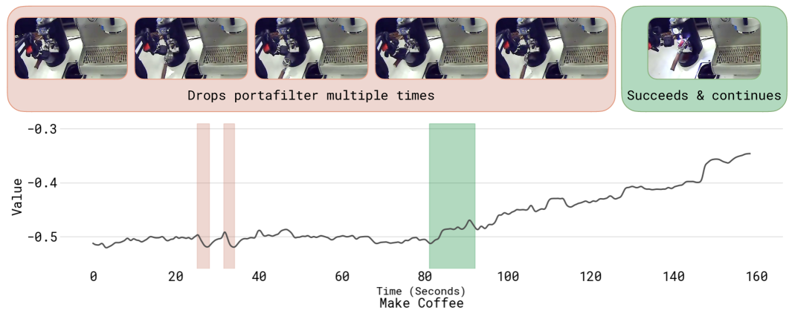
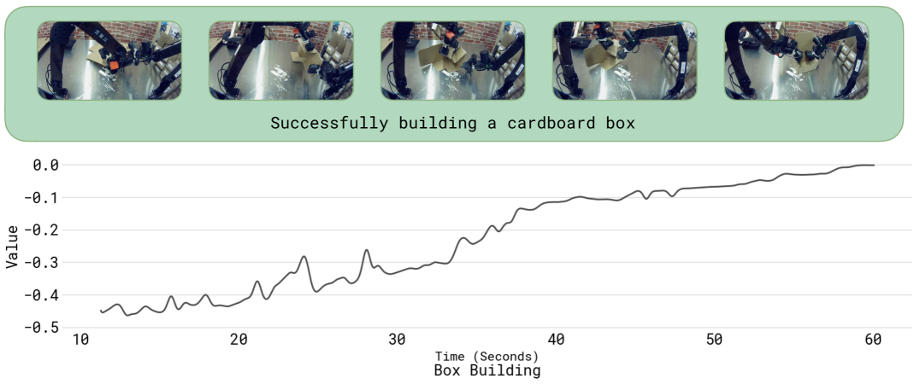
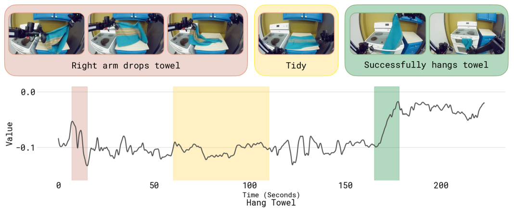
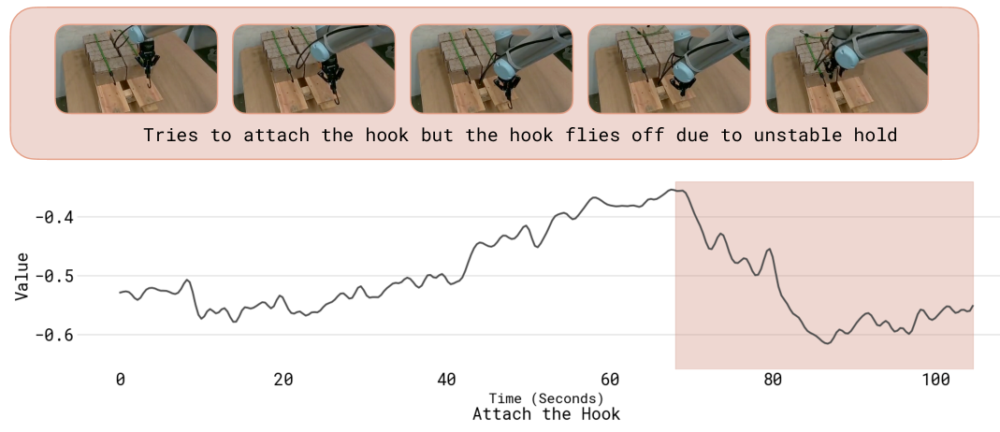
A-C 정책 개선을 위한 로그 우도 계산
식 4으로부터 로그 우도(log-likelihood)를 도출하기 위해, 먼저 전체 모델 우도를 자기회귀(autoregressive) 항과 확산(diffusion) 항으로 분해할 수 있음을 관찰할 수 있다.
| (6) | ||||
여기서 첫 번째 항은 플로우 매칭(flow matching)으로 모델링되고, 두 번째 항은 이산화된 행동 의 자기회귀 우도이며, 세 번째 항은 자기회귀 텍스트 우도에 대응한다. 자기회귀 우도는 정답(ground truth) 토큰에 대해 평가된 교차 엔트로피 손실(cross-entropy loss)을 사용하여 일반적인 방식으로 추정할 수 있다. 에 대한 연속적인 우도의 경우, 닫힌 형식(closed form)의 우도를 구할 수 없다 [lipman2022flow]. 그러나 이전 연구 [mcallister2025fpo]를 따라, 1단계 확산 과정을 다음과 같은 우도를 갖는 가우시안 분포로 간주할 수 있다.
| (7) | ||||
이때 및 이다. 이로부터 [KingaDiffELBO, mcallister2025fpo]를 따라 우도에 대한 증거 하한(evidence lower bound)을 형성할 수 있으며(실질적으로 및 에 대해 주변화함), 이는 다음과 같다.
| (8) | ||||
여기서 은 노이즈에 의존하는 가중치 항이고, c는 과 무관한 상수이다. 유도 과정은 [KingaDiffELBO]를 참조하라. 해당 문헌에서는 이 가중치 항의 선택에 대해 부록 D.3에서 플로우 매칭과 확산 사이의 관계도 도출하고 있다. 마지막으로, 이 하한을 텍스트 출력의 이산화된 행동 부분에 대한 자기회귀 우도 와 결합하고, 가중치 항들을 에 통합하면 다음과 같다.
| (9) | ||||
이는 본문에서 제시된 하한식이다.
A-D PPO 구현
우리는 DPPO 및 FPO [Ren2025DPPO, mcallister2025fpo]와 관련된 PPO [schulman2017proximal]의 변형을 구현하고 이를 추가적인 베이스라인으로 사용한다. 모델의 자기회귀(autoregressive) 부분과 확산(diffusion) 기반 행동 전문가를 연산 효율적인 방식으로 모두 학습시키기 위해, 단일 단계 확산 목적함수만을 기반으로 우도(likelihood)를 계산한다.
특히, 식 (9)(이전 섹션)과 유사하지만 개선 지표(improvement indicator)가 없는 우도 하한(likelihood bound)을 사용한다. 이를 자기회귀 항과 흐름 매칭(flow-matching) 항으로 분해하면 다음과 같이 쓸 수 있다.
| (10) | ||||
이는 FPO [mcallister2025fpo]에서 사용된 확산 우도 하한과 유사하다. 그리고 우리는 이를 확산 항과 자기회귀 항으로 분리된 PPO 스타일 손실 함수와 결합한다. 예비 실험에서 우리의 설정에서는 표준 PPO 클리핑(clipping) 목적함수를 사용할 때 행동 전문가(무제한 확산 헤드로 행동을 모델링함)에 신뢰 영역(trust region) 제약 조건을 강제하기가 어렵다는 것을 발견했다. 이는 아마도 몇 번의 그래디언트 단계마다 실제 로봇으로부터 새로운 데이터를 수집할 여유가 없는 우리 알고리즘 설정의 "오프라인" 특성에 부분적으로 기인한 것으로 보인다. 학습을 안정화하기 위해 SPO [xie2025simplepolicyoptimization]를 따르는 PPO 제약 조건의 대안적 정의를 사용하는 것이 효과적임을 발견했다. 그 결과로 얻어지는 손실 함수는 다음과 같다.
| (11) | ||||
여기서 은 절충(trade-off) 매개변수이고, , 는 각각 자기회귀 및 흐름 매칭 모델 부분에 대한 신뢰 영역 매개변수이다. 우리는 이 변형을 사용하여 체크포인트부터 시작하여 평가 데이터에 대한 학습을 수행한다.
A-E 을 이용한 테스트 시간 정책 개선을 위한 CFG 사용
학습 후에는 식 (2)에서 을 설정하여 평가에 사용되는 정책을 더욱 날카롭게(sharpen) 만들 수 있다. 이전 연구 [Frans2025DiffusionGuidance]에서 보여준 바와 같이, 이 날카로워진 정책은 학습된 정책인 및 에 의해 암묵적으로 정의되므로 추가적인 학습 없이 복원할 수 있다. 구체적으로, 학습 후에 다음과 같은 근사치를 형성할 수 있다.
| (12) |
이제 확산 모델이 우도의 그래디언트를 효과적으로 학습한다는 것, 즉 각각 및 을 나타낸다는 것을 알 수 있다. 이로부터 Frans2025DiffusionGuidance를 따르면, 만약 우리가 다음 그래디언트를 따라 흐름 매칭 추론을 실행할 경우
| (13) | ||||
우리는 원하는 감쇄된 분포(attenuated distribution)로부터 효과적으로 샘플링하게 된다. 본문에서 언급했듯이, 매개변수 은 학습 중에 도입하는 어드밴티지 임계값(advantage threshold) 과 느슨하게 연결되어 있다(둘 다 분포를 날카롭게 만든다는 점에서, 하나는 추론 시점에, 다른 하나는 학습 시점에). 우리는 의 높은 설정값으로 학습 후 분포를 날카롭게 만들면 행동 분포가 학습된 지지 영역(support)의 경계로 밀려나 과도하게 공격적인 움직임으로 이어질 수 있음을 발견했다. 따라서 학습 직후 좋은 조건부 정책을 직접 얻기 위해 주로 에 의존하고, 유용한 경우 적절한 설정값(예: )과 결합한다.
A-F 추가적인 알고리즘 세부 사항
알고리즘 1에 사용되는 작업별 매개변수를 설정하는 세부 사항을 설명한다.
어드밴티지 추정 (Advantage Estimation): 사후 학습(post-training) 동안, 우리는 을 사용하여 어드밴티지 함수를 추정하며, 여기서 은 동일한 궤적에서 단계 앞서 샘플링된 관측값이다. 이 어드밴티지를 계산하기 위해 의 미래 예측(lookahead)을 사용한다. 사전 학습(pre-training) 동안에는 어드밴티지 추정치를 로 계산하고 각 에피소드에 대해 로 설정하는데, 이는 어드밴티지의 분산이 더 높은 추정치이다. 가치 함수에 대한 단 한 번의 추론 호출을 사용하여 사전 학습 중에 즉석에서 어드밴티지 값을 계산할 수 있기 때문에 이 어드밴티지 계산법을 사용한다. 경험적으로 이 어드밴티지 추정치는 사전 학습 동안 다양한 작업의 대량 데이터로 정책을 학습시킬 때 잘 작동함을 확인했다.
어드밴티지 조건부 드롭아웃 (Advantage conditioning dropout): 학습 동안, 우리는 30%의 확률로 어드밴티지 지표에 대한 조건화를 무작위로 드롭아웃한다. 이 드롭아웃을 적용함으로써 추론 시점에 조건부 또는 비조건부 정책으로부터 직접 샘플링할 수 있고 테스트 시간 정책 개선을 위해 CFG를 사용할 수 있으며(자세한 내용은 섹션 A-E 참조), 이는 손실 곱셈기(loss multiplier) 을 효과적으로 대체한다.
어드밴티지 임계값 (Advantage threshold): 작업별 어드밴티지 임계값 은 다음과 같이 설정된다. 사전 학습 동안에는 데모 데이터의 약 이 양의 어드밴티지를 갖도록 각 작업의 임계값을 선택한다(1만 개의 데이터 포인트를 무작위로 샘플링하여 계산). 미세 조정(fine-tuning) 동안에는 일반적으로 각 반복(iteration)의 평가 롤아웃 중 약 가 양의 어드밴티지를 갖도록 임계값을 설정한다. 티셔츠 및 반바지 빨래 접기 작업(고품질 데모 데이터로 학습하면 속도는 느리지만 성공률이 높은 정책이 생성됨)의 경우, 데이터의 약 만이 양의 어드밴티지를 갖도록 임계값을 높인다.
데이터셋 구성 (Dataset composition): 모든 작업에 대해 알고리즘 1에 설명된 데이터셋 병합 전략을 사용한다. 그러나 우리의 각 작업은 고유한 특성을 가지고 있다. 에피소드 길이가 다르고, 각 작업에 대한 이터레이션 0 모델의 성능이 다르며, 한 가지 작업(상자 조립)은 배포 시나리오의 외부 현장(offsite)에서 수행된다. 따라서 처음에 시작하는 데모 데이터의 양이 다르고, 반복적 개선을 위해 수집하는 경험 데이터의 양도 다르다. 빨래(티셔츠 및 반바지)의 경우 전문가의 교정(correction) 없이 자율 평가 데이터만 사용한다. 모델 성능을 속도 측면에서 전문가 데이터 수집가와 매우 유사하게 끌어올림에 따라 교정을 제공하기가 어려워진다. 이 작업을 위해 우리는 평가 성능을 보고하기 위해 4개의 로봇 스테이션에서 300개의 에피소드를 수집한다. 다양한 빨래 접기 작업의 경우 450개의 평가 에피소드와 287개의 교정 에피소드를 수집한다. 실패 모드 제거 소거 연구(ablation)를 위해 자율 데이터와 정책 교정 데이터를 모두 수집한다. 총 대의 로봇에 걸쳐 자율 에피소드 개와 교정 에피소드 개를 수집한다. 상자 조립의 경우 배포 시나리오에서 직접 데이터를 수집하며, 각 이터레이션마다 개의 데모와 개의 교정 에피소드를 수집하고 총 대의 로봇을 사용한다. 카페 작업의 경우 단일 이터레이션을 수행하고 개의 교정 에피소드와 개의 자율 에피소드를 수집한다.